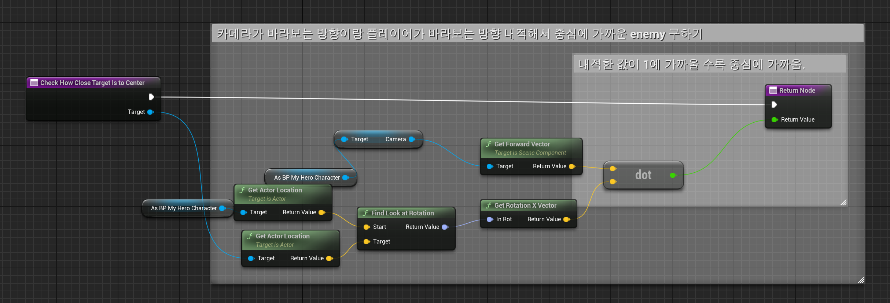
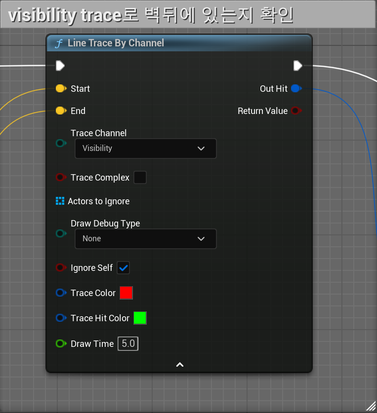
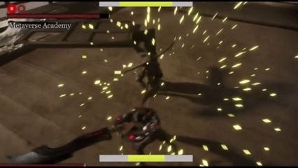
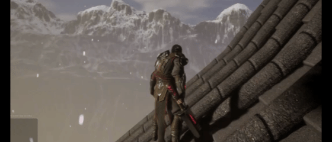
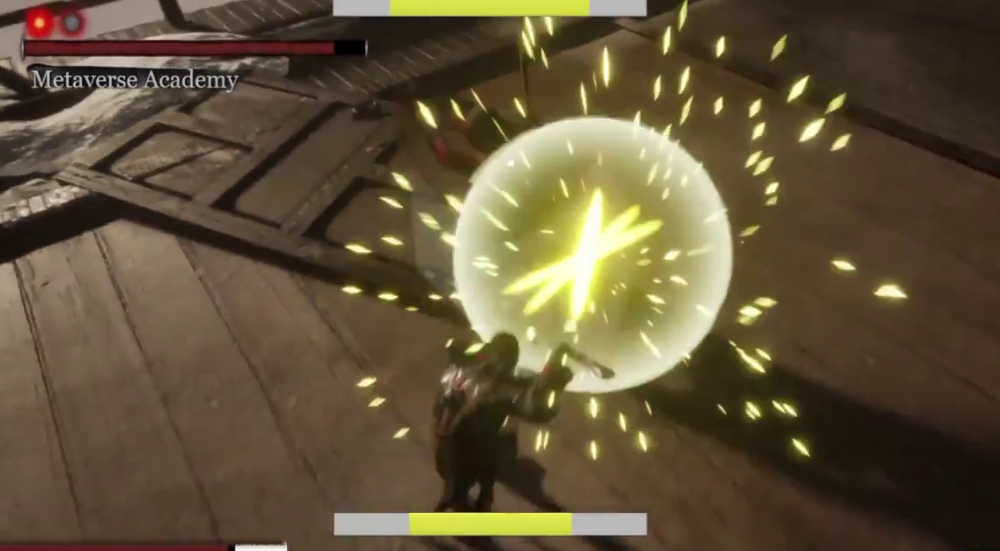
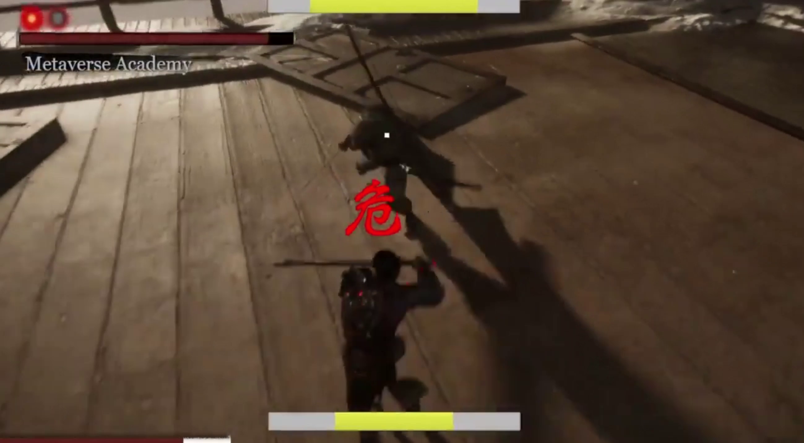
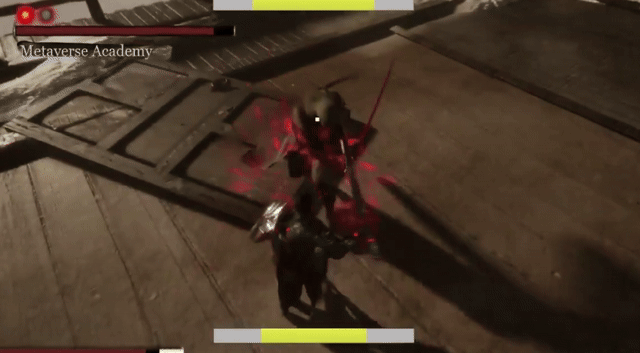

Isekiro
세키로식 패링 판정을 재구성하여 겐이치로 보스전을 모작해 보았습니다.
- 장르
- 3인칭 패링 액션
- 엔진 · 언어
- Unreal Engine 5 · C++
- 규모
- 팀 프로젝트
- 담당
- 전투 판정 · 락온 · 이동
어떤 게임인가
플레이어가 적의 공격 타이밍에 맞춰 튕겨내며 체간을 깎아 처치하는 전투를 만들었습니다. 일반 공격과 위험 공격(붉은 표식)이 있고, 둘은 같은 패링 입력을 쓰지만 받아낼 수 있는 시간이 다릅니다.
소울류를 오래 해왔는데 특히 손맛이 좋다고 느꼈던 세키로를 모작보고 싶었습니다. 프로젝트를 진행하며 통칭 손맛이라고 하는 것이 단순히 패링뿐만이 아닌 카메라 쉐이크 , 슬로우 모션 등 여러 요소들의 합작품임을 알게 되었습니다.
전투 외에 락온 타게팅과 그래플링 훅 이동을 구현했습니다.

기능 01
락온 타게팅
화면 중앙에 가까운 적을 자동으로 잠그고, 카메라와 이동을 그 대상에 묶습니다.
구현
- 카메라 전방 벡터와 적 방향 벡터의
Dot Product로 후보 우선순위를 매겨, 각도상 화면 중앙에 가장 가까운 적을 선택합니다. Line Trace로 대상까지 시야가 통하는지 한 번 더 검증합니다.RInterp To로 카메라 회전을 부드럽게 보간하고, 락온 상태에서는 이동을 자동으로 Strafing으로 전환합니다.- 내용을 적으세요.
- 내용을 적으세요.
화면



성과
벽 뒤 오탐 제거
대상 전환이 플레이어 시선과 일치
기능 02
그래플링 훅 이동
지정한 지점으로 갈고리를 쏘아 캐릭터를 끌어당기는 이동입니다.
구현
- 발사 전에 도착 지점의 지형을 먼저 검증하고,
Timeline과Curve로 이동 궤적을 보간합니다. Cable Component로 발사체와 캐릭터 손 소켓을 물리적으로 연결하고 환경 충돌을 처리합니다.Anim Notify로 이동 시작·종료 시점과Flying/Falling상태를 동기화합니다.
화면

성과
도착 지점 결정론적
지형 충돌로 인한 이동 실패 제거
연출과 이동이 같은 타임라인에서 동기
기능 03
패링 판정
이 프로젝트를 만든 이유입니다. 같은 입력으로 두 가지 난이도를 만들었습니다.
구현
- ParryBox를 무기 소켓에 붙이는 식으로 컴포넌트화 하여 기능적으로 분리하였습니다. 후에 이 컴포넌트를 액터에 붙이기만 한다면 패링의 기능을 사용할 수 있습니다.
- 판정 가능 시간과 쿨다운을 별도의 타이머로 분리했습니다.
- 판정 성공 시 충돌 채널을 전환해 피격을 무효화하고,
TimeDilation으로 타격감을 연출합니다. - 일반 공격은 판정 창 8프레임, 위험 공격은 1프레임으로 값만 다르게 주었습니다. 입력 처리와 코드 경로는 완전히 같습니다.
화면



성과
일반 8 frame · 위험 1 frame
같은 입력 · 같은 코드 경로로 두 난이도
난이도를 올려도 입력이 막히지 않음
트러블슈팅
어려움은 막혀서 구조를 바꾼 것, 디테일은 흔한 문제지만 그냥 넘기지 않고 처리한 것입니다.
디테일
기능 01 — 락온 타게팅
- 문제
- 벽 뒤의 적이 있을 경우 플레이어가 보고 있지도 않은 대상으로 카메라가 돌아가 조작이 끊겼습니다.
- 원인
- 각도만으로 우선순위를 정했기 때문입니다. 내적값은 “화면 중앙에 가까운가”만 말해줄 뿐, 그 사이에 무엇이 있는지는 모릅니다.
- 해결
- 각도로 후보를 추린 뒤
Line Trace로 시야를 한 번 더 검증해, 가려진 대상을 후보에서 제외했습니다. 후보 선정과 유효성 검사를 두 단계로 나눈 것이 핵심입니다.
어려움
기능 02 — 그래플링 훅 이동
- 문제
- 물리 힘을 계속 더해 끌어당기니 도착 지점이 매번 달라지고, 지형에 걸려 이동이 실패하거나 연출 타이밍이 어긋났습니다.
- 원인
- 누적된 힘의 결과는 프레임 수와 충돌 상황에 따라 달라집니다. 궤적을 예측할 수 없으니 애니메이션 시점도 맞출 수 없었습니다.
- 해결
- 힘을 누적하는 대신 사전 지형 검증 후
Curve기반 보간으로 이동을 직접 제어했습니다. 도착 지점과 소요 시간이 발사 순간에 확정되므로, 그 값에 맞춰Anim Notify로 연출을 붙였습니다.
전투 판정은 프로토타입 범위에서 검증했고 네트워크 복제는 다루지 않았습니다.
패링 판정 값(8프레임 / 1프레임)은 60fps 기준입니다.